16 个实用小技巧
大家好，我是R哥。
这几年 AI 编程工具越来越火，尤其是
Cursor、Claude Code 这种终端级 AI 编程助手，用好了真的能让程序员开发效率直接起飞。
但很多同学用 AI 写代码，常常卡在 “不会提问”、“不会拆需求”、“不会控制上下文”，
只会傻傻提问，很多实用技巧都不会，结果总是写不出自己想要的效果。
今天这篇笔记，R哥就手把手带你盘一盘：如何高效用 Claude Code 搞定开发、提效撸活，告别低效体力活！
（内容干货，建议收藏慢慢看～）
Claude Code 的安装和使用先看这篇：
用上了 Claude Code，才发现 Cursor 和 Gemini Cli 都是弱智。。（保姆级安装和使用教程分享）
1、把你的需求说具体点
别再说：“修复这个漏洞
” 这么笼统的指令：尽量把你的需求说具体点。
你可以这样和它说：
修复用户登录时不输入密码出现的空指针错误
2、把复杂的需求分步执行
如果是小任务/模块，可以一次性把需求发给 AI，一次性出结果，整体效率更高。
但是，如果是大需求，实现流程比较长的那种，建议把复杂的任务拆解成小步骤，比如：
给用户 API 创建一个新接口；
给请求的字段添加必要的验证；
编写这个接口的测试用例；
...
因为 AI 上下文都有限制，上下文 /记忆太长可能输出不全、甚至被截断，还是分步最安全，每一步完成后你都可以先 review/测试，再让 AI 执行下一步。
像上面的示例，其实并不复杂，可以一次性发给 Claude Code，AI 能整体考虑代码结构和风格，减少重复解释和沟通成本。
3、先理解项目代码再开动
在修改代码之前，先让 Claude 理解你的代码，比如：
分析一下数据库表结构；
这个应用中的错误是如何处理的？
...
修改前，先让 AI 理解你业务和代码，这样才能更精准、高效地辅助你开发和优化。
4、学会用快捷键，节省时间
比如：
输入 /
查看所有斜杠命令；使用上下方向键查看命令历史；
使用 Tab 键进行命令快速补全；
使用 Option + Enter
换行；使用 Ctrl + C
退出终端等等。
5、使用免授权模式
你是不是经常遇到 Claude Code 干活干一半，停下来让你授权？
不授权就卡在那里，虽然可以在当前会话可以设置不再询问，但权限又有好几种，每种权限都要来问一下，严重影响效率。
其实，启动 claude 时有一个参数：
claude --dangerously-skip-permissions带上这个参数启动时，Claude Code 会出现警告提示：
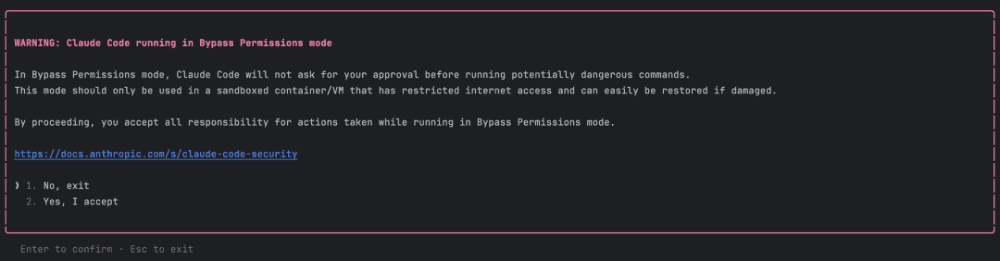
你需要点确认（Yes）才能开启 Bypassing Permissions
模式，开启此模式后，终端下面会出现黄色的 Bypassing Permissions
模式提示：
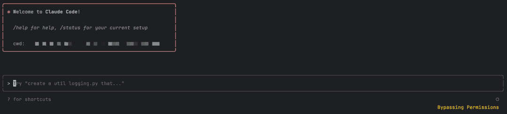
开启 Bypassing Permissions
模式后，后面所有操作就都不需要你授权了，Claude Code 哐当就把所有活干了。
每次都输入 claude --dangerously-skip-permissions
太麻烦了，还可能输错，可以考虑他那一个 alias 别名：
alias claude='claude --dangerously-skip-permissions'
这只是临时生效，永久生效可以把它放到个人环境配置文件中，然后 source 生效一下。
6、激活深度思考模式
在 Claude Code 中，可以使用 “think
” 这个词来激活深度思考模式，包括以下几种级别：
“think” < “think hard” < “think harder” < “ultrathink”
使用这些深度思考，会直接对应系统中不同级别的思考预算，每一级都会逐步增加 Claude 可用的思考预算，毫无疑问，使用 ultrathink
是最费钱的，也能发挥它的最大潜能。
如果你是订阅的是 Max 套餐，可以考虑使用 ultrathink
模式，不然就得小心你的钱包。
比如我来测试一下：
1+1=？ultrahink
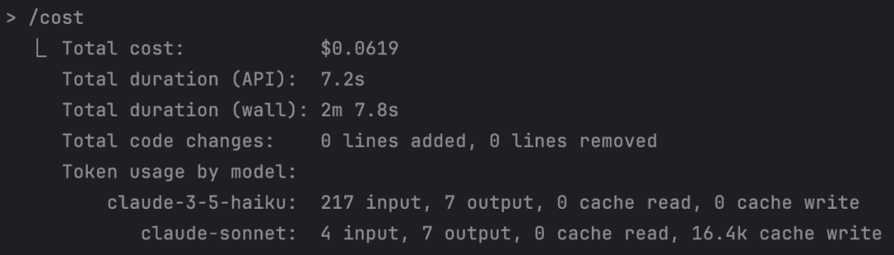
一个 1+1 计算耗费了 0.06 美元，大概不到 5 毛 RMB。。
7、输错指令，随时打断它工作
如果在 Claude Code 工作时，有时候可能给的命令描述的不对，如果你想让它停止，只需要按 ESC
键即可：
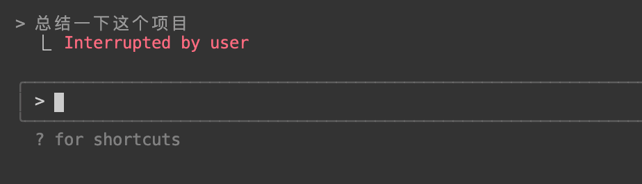
终端上面会显示被用户打断。
8、发送图片处理
Claude Code 可以发送图片并进行处理，在命令行中，把图片和提示词发过去，让它更好的理解你的意图。
如图所示：
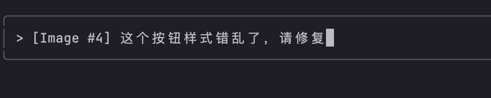
注意，在 Mac 中粘贴图片不是使用 command + v，而是使用 ctrl + v
快捷键。
你还可以发送以下命令：
这个图片显示了什么？
这是错误的截图，是什么原因导致的？
请根据这个图片的设计模型设计网页
9、恢复历史会话
非交互模式
Claude Code 提供两个选项来恢复之前的对话：
claude --continue
或者 claude -c
：自动继续最近的对话，无需任何提示。claude --resume
或者 claude -r
：显示历史对话选择器；
这两个带参数的命令需要在「非交互模式
」下进行，也就是还没有进入 Claude Code。
交互模式
如果你已经进入了 Claude Code 会话，想恢复到之前的哪个历史会话，可以使用 /resume
命令恢复历史会话：
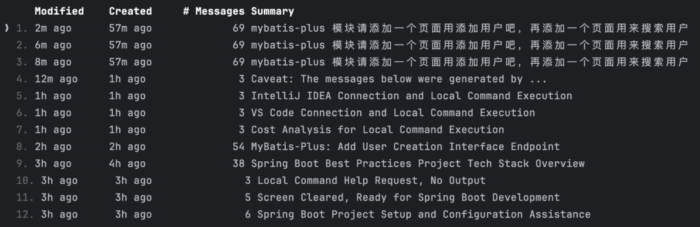
上下方向键选中一条记录可以恢复会话。
10、记忆管理
记忆文件介绍
Claude Code 提供三种记忆位置，每种都有不同用途：
./CLAUDE.md | |||
~/.claude/CLAUDE.md | |||
./CLAUDE.local.md |
其中， CLAUDE.md
文件是 Claude Code 自动读取的记忆文件，类似于 Cursor 中 rules
规则文件，但比它要更强大，它可以为 Claude 提供更多项目相关的上下文信息，如：
常用的 bash 命令
核心文件和工具函数
代码风格指南
测试说明
代码库规范
开发环境设置
更多希望 Claude 记住的信息等等
当 Claude Code 启动时，以上所有记忆文件会自动加载到运行环境中。
可以在多个位置放置 CLAUDE.md
文件，Claude Code 会递归读取这些文件，从当前工作目录开始，向上递归到根目录，读取找到的任何 CLAUDE.md
文件。
编辑记忆文件
在会话期间使用 /memory
斜杠命令，可以在系统编辑器中打开记忆文件：
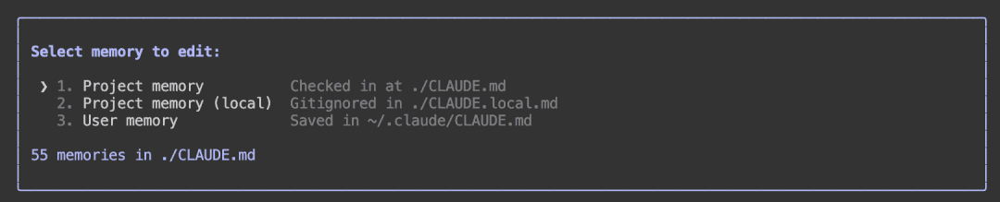
选择一个记忆文件回车进行编辑，其中第一个就是使用 /init
初始化命令生成的，第二个已废弃，第三个是用户级记忆文件。
比如我们可以修改第三个用户级记忆文件：
每次请用中文回答我。
这样设置记忆后，后续所有项目的交互就都是中文回答的了。
11、和 Git 进行交互
在 Claude Code 中，我们的 Git 操作就可以变得对话形式，不用记住一些繁琐的命令。
我修改了哪些文件
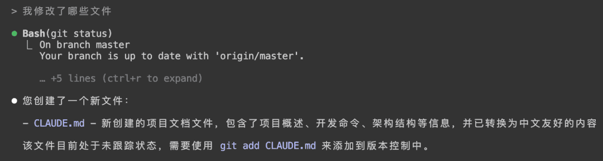
用合理描述性信息提交我的更改
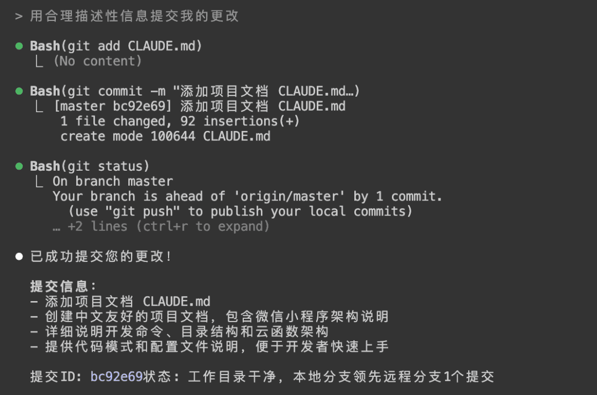
推送本分支到远程
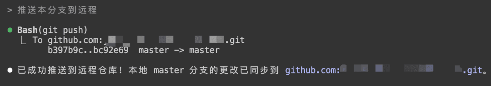
创建一个新分支:feature/test
删除本分支并切换到master分支
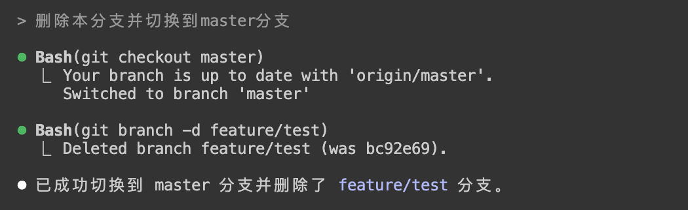
显示最近3次提交中所有文件列表
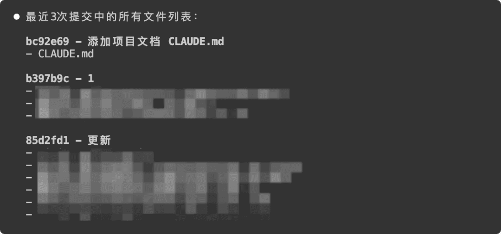
很方便快捷吧，使用自然语言和 Git 进行交互吧！
12、和 Linux 交互
因为 Claude Code 是终端形式使用嘛，所以我们也可以把它当作 Linux 智能助手用，无需记住繁杂的 Linux 命令。
在交互模式下：
列出行数最多的前3个.java文件
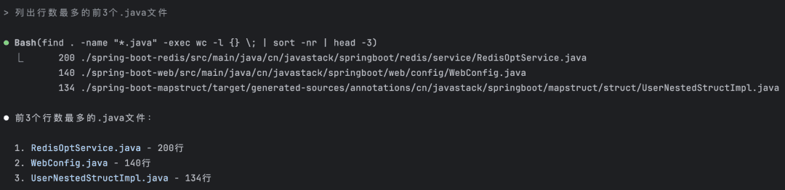
从执行信息可以看到它正在执行的命令，这么复杂的命令一般人是很难记住的。
在非交互模式下：
claude -p "列出行数最多的前3个.java文件"
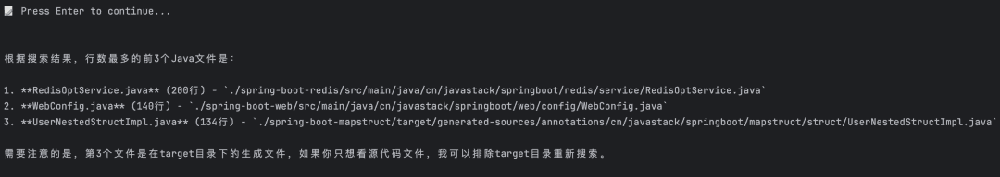
这是执行一次命令，它会列出满足条件的文件后退出 Claude Code 交互模式。
13、模型切换
Claude Code 目前支持 Claude Opus 与 Claude Sonnet 4
两个模型的灵活切换，使用 /model
命令进行切换：
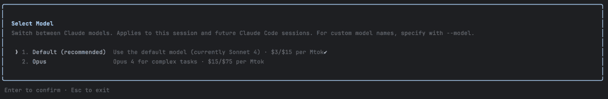
默认为 Claude Sonnet 4
，可以切换到 Claude Opus，不过个人感觉没必要，强烈推荐使用 Claude Sonnet 4，其使用体验与Claude Opus 并没有明显差别，但计费倍率仅为其 1/5
，土豪请忽略。
注意，只有 Max 用户才支持 Claude Opus 并支持切换
，Pro 用户只支持 Claude Sonnet 4。
14、查看消耗情况
使用 /cost
命令查看当前会话使用情况：
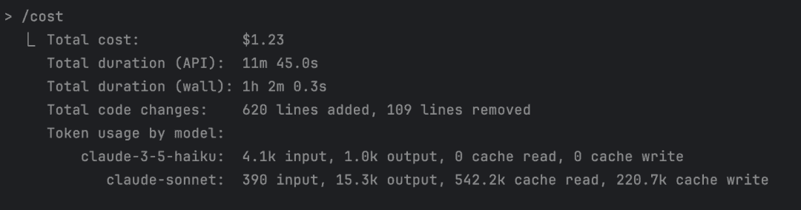
如图，显示我当前会话已经消耗了 1.23 美金。
官方查看消耗，但过于笼统，不够直观，推荐使用 ccusage
工具来查看。
安装 ccusage：
sudo npm install -g ccusage
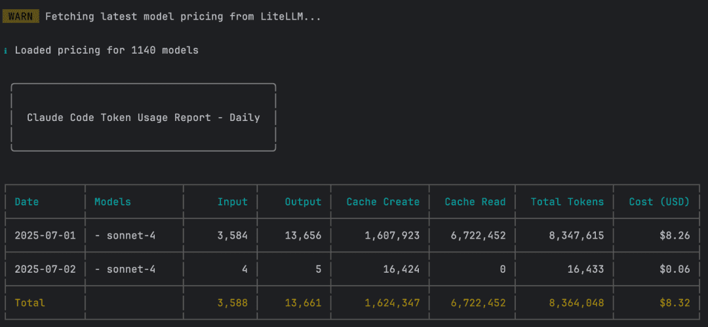
如果要查看自某天开始的消耗：
ccusage -s 20250701
如果要实时查看消耗：
ccusage blocks --live
Claude Pro / Max 订阅用户可以不用理会消耗，它是按月计费的，不是按使用量计费的，如下面所示：
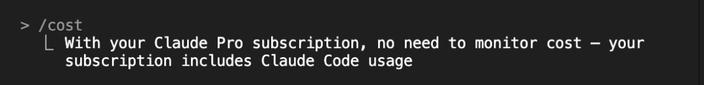
超过了使用量就会变得不可用：
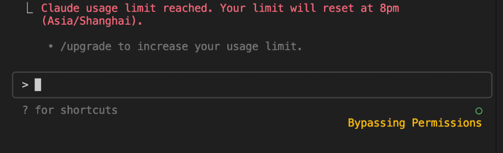
需要等待，到了指定时间才能恢复。
15、上下文压缩
Claude Code 提供了一个 /compact
压缩命令：
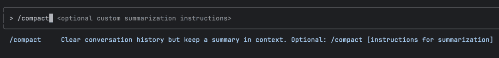
它会清除对话历史记录，但保留上下文中的摘要。
这样做的好处是：
减少对话上下文大小
：当对话历史变得很长时，使用 /compact
可以压缩对话内容，减少令牌使用量。手动压缩控制
：虽然 Claude Code 默认在上下文超过 95% 容量时自动压缩（可通过 /config
开启/关闭自动压缩），但你可以使用 /compact
手动触发压缩。
如图所示：
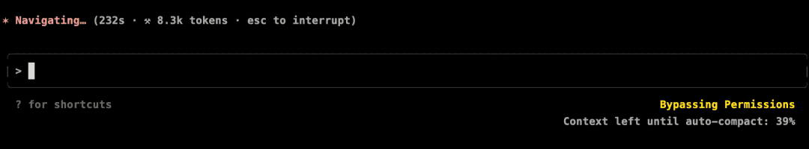
当剩余上下文空间不多时，右下角会显示自动压缩的剩余百分比，当达到 0% 时就会进行压缩。
所以，为了有效管理成本和性能：
建议在上下文变大时定期使用 /compact
手动进行压缩；定时使用 clear
命令重置上下文；分解复杂任务或者把需求尽量具体化；
当然，土豪，请略过。
16、自定义快捷命令
使用介绍
Claude Code 支持自定义命令，你可以创建一些命令来快速执行特定的提示或任务，比如：
分析这个项目的性能，并提出三个具体的优化建议。
用合理描述性信息提交所有变更文件，然后推送到远程仓库。
...
这样一些常用的操作就不需要写一堆文字了，用自定义命令即可。
自定义命令语法：
/<prefix>:<command-name> [arguments]自定义命令解读：
命令分为用户级和项目级；
用户级命令所有项目都能用，项目级命令只有当前项目可以用；
用户级命令放在个人 ~/.claude/commands
目录下，而项目级命令放在当前项目 .claude/commands
目录下；使用命令时，用户级命令以 /user:
为前缀，项目级命令 /project:
为前缀，后面跟的是命令文件名称，可级联；命令文件支持使用 $ARGUMENTS
参数占位符，在命令后面带上参数，如：/project:test 123
它会用 123 替换命令文件中的 $ARGUMENTS
标记。
比如如果有 .claude/commands/frontend/component.md
自定义命令，使用方法 就是：/project:frontend:component
。
实战应用
项目级命令
在当前项目创建自定义命令目录：
mkdir -p .claude/commands
创建一个项目级优化命令：
echo "分析这个项目的性能，并提出三个具体的优化建议。" > .claude/commands/optimize.md
在 Claude Code 中使用自定义命令：
/project:optimize
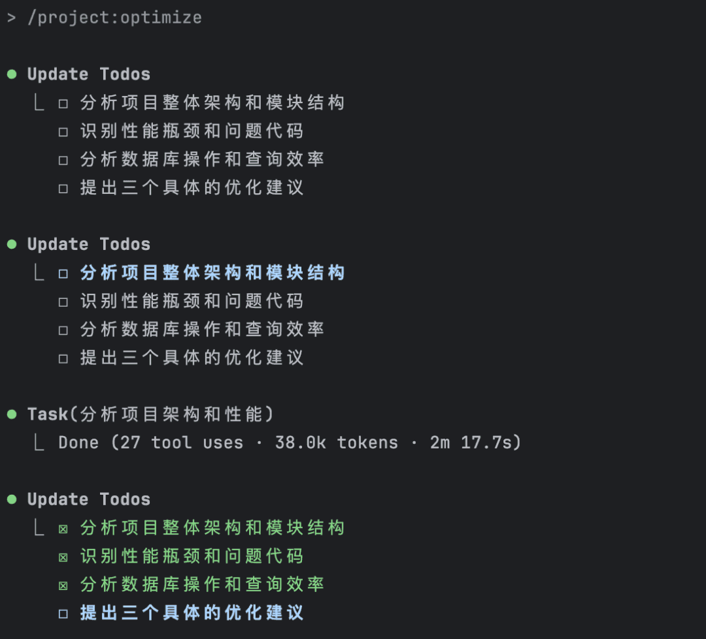
没想到它还自己把任务细化了，从分析项目整体架构、性能瓶颈、数据库操作，然后再提出优化建议。
用户级命令
在个人目录下创建自定义命令目录：
mkdir -p ~/.claude/commands
创建一个项目级优化命令：
echo "用合理描述性信息提交所有变更文件，然后推送到远程仓库。" > ~/.claude/commands/push.md
在 Claude Code 中使用自定义命令：
/user:push
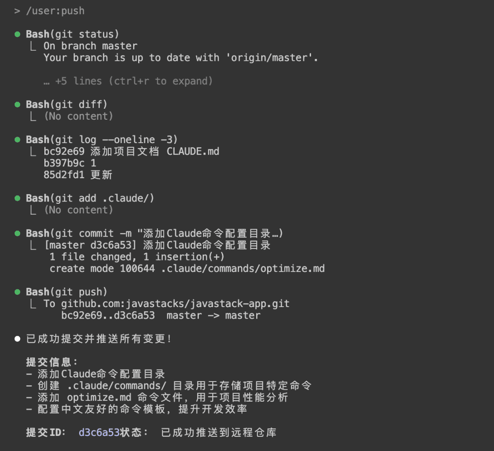
nice~这样让 Git 交互也更简单了！
好了，这次的分享就到了～
以上就是我在实际使用 Claude Code 编程时的一些高效技巧和避坑心得
，真的都是无保留实践总结。
AI 不会淘汰程序员，但不会用 AI 的除外，会用 AI 的程序员才有未来！
未完待续，接下来会继续分享下 Claude Code 心得体验、高级使用技巧，公众号持续分享 AI 实战干货，关注「AI技术宅
」公众号和我一起学 AI。
版权声明：
本文系公众号 "AI技术宅" 原创，转载、引用本文内容请注明出处，抄袭、洗稿一律投诉侵权，后果自负，并保留追究其法律责任的权利。
< END >
推荐阅读：
用了 Claude Code，才发现 Cursor 是弱智。
年度爆款！全球最火的 AI 编程工具合集
MCP 是什么？如何使用？一文讲清楚！
从零开始开发一个 MCP Server！保姆级教程！
62 个 DeepSeek 万能提示词（建议收藏）
33k+ star！全网精选的 MCP 一网打尽！
更多 ↓↓↓ 关注公众号 ✔ 标星⭐ 哦